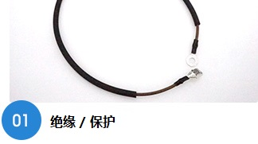
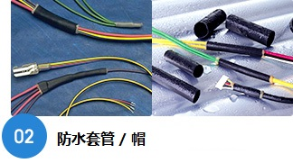
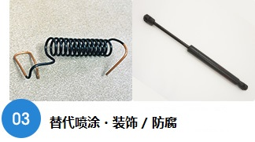
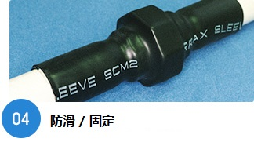
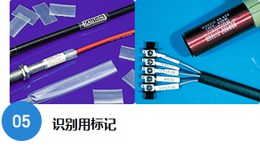
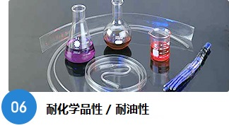
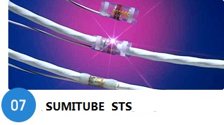
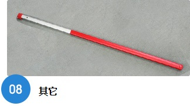

广泛使用在电线的绝缘,保护等方面。其中最具代表的是SUMITUBE-A,F(Z)等系列,也可以根据您使用场合的需要选择其它各种类型的套管。

主要使用在汽车线路的线套上,有W3B2,SA3,附带粘接层的套管,以及多层套管等各种类型可供选择。

能应用于金属棒的防腐,既能表现出和喷涂相同的质感,而且也能在使用套管后继续进行弯曲加工。可以使用单层套管,如果您有防水需求的话,我们更建议使用带粘接层的多层套管。

能有效防止螺丝螺栓的松动,照片上的是使用厚壁套管的效果例子。

管套可以使用于电线的识别。①有透明的作保护作用的套管、②也提供印有文字信息的套管以供选择。

也有对化学品,油有防护作用的材料所制成的套管。SUMITUBE-K,K2就是其中的代表,对于耐油性和耐化学品性在各产品的介绍页均有记载,尽请参照。

航空领域使用的带有焊料圈的热收缩连接部件。

出于防滑,防静电的目的,在高空作业剪刀,工具等的手柄处使用的例子也有很多。请与本公司联系,我们会根据您所使用的场合,为您建议最适合的套管品种。